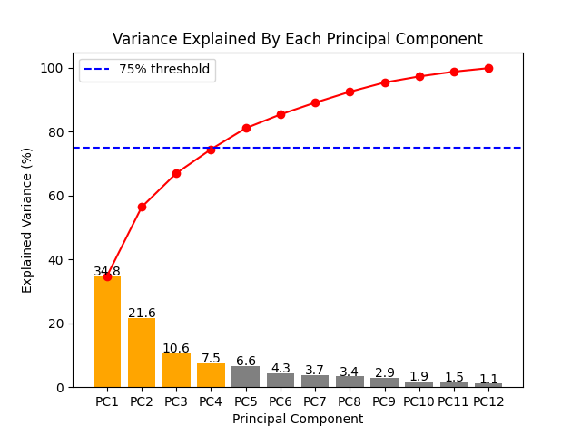
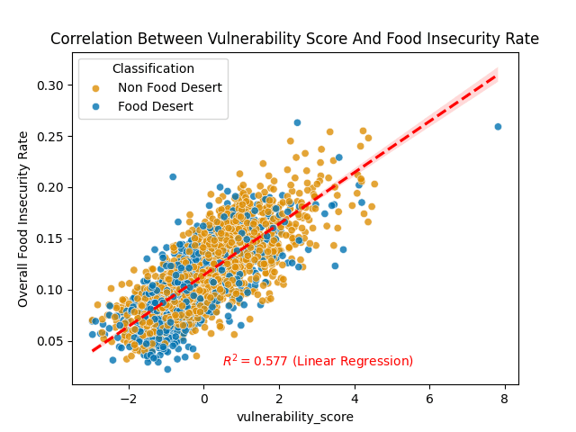

This hypothesis examines the major risk factors and whether we can approach food insecurity from a different perspective.
USDA Food Desert Definition
A low-income census tract is any tract where the tract's poverty rate is 20% or greater.
A low-access census tract is any tract where a significant share of the population lives far away from a supermarket.
A census tract is considered a food desert if the tract is both low-income and low-access.
Navigating through a maze of data
Imagine you want to understand why some counties have a higher food insecurity rate than others.
You have lots of information about each county: how many people live in poverty, how many people don't have cars, and how far they live from grocery stores, among other statistics such as unemployment rate, SNAP participation rate, and cost per meal, etc.
That's a lot to look at all at once.
That was our situation starting this project.

Figure 1: Principal Component Analysis
PCA helps us find the big patterns hiding in all that information.
Instead of looking at a bunch of variables separately, PCA helps combine correlated ones into a few big themes, creating new hybrid variables called principal components.
Figure 2 shows the variance explained by the principal components and how a combination of PC1, PC2, PC3, and PC4 (orange columns) capture 74.5% of the differences among counties, meaning most of the variation in food insecurity risk factors can be summarized by these patterns.
Instead of evaluating the four principal components separately, we combined them into a single vulnerability score that summarizes how likely a county is to face food insecurity based on multiple risk factors.
This makes it easier to compare counties and identify areas that need the most support.

Figure 2: Evaluating Vulnerability Score Metric
Now that we have a new metric, the next step is to gauge its effectiveness.
Figure 3 is a scatter plot that shows the relationship between the new vulnerability score metric and the food insecurity rate. This plot and the coefficient of determination of 0.58 indicate a strong positive correlation.
In other words, our vulnerability score metric is great at predicting how likely a county is to face food insecurity. Hooray 🥳!
Unexpected observation:
Based on our understanding of food deserts and food insecurity, we were expecting to see a strong positive correlation between being a food desert and having a high food insecurity rate. As a result, we were also expecting food deserts to have higher vulnerability scores compared to non-food deserts.
Figure 3 showed that none of these assumptions were true.
We tested this by measuring the relationship between the binary food desert classification and the overall food insecurity rate using the Point-Biserial correlation. This results in a correlation of -0.0101, indicating that there is no relationship between the two.
Now that we know food desert binary classification and vulnerability scores are not correlated, we also know that there are counties with high vulnerability scores that are not currently classified as a food desert.
We were able to locate 329 non-food desert counties with high vulnerability scores (in the 75th percentile nationwide).
This is important as these counties may not appear on the radar for food assistance resources from government agencies and non profit-organizations due to their status as a non-food desert.
We hope that this result could help circumvent this issue and lead to better policies surrounding food insecurity in the future.